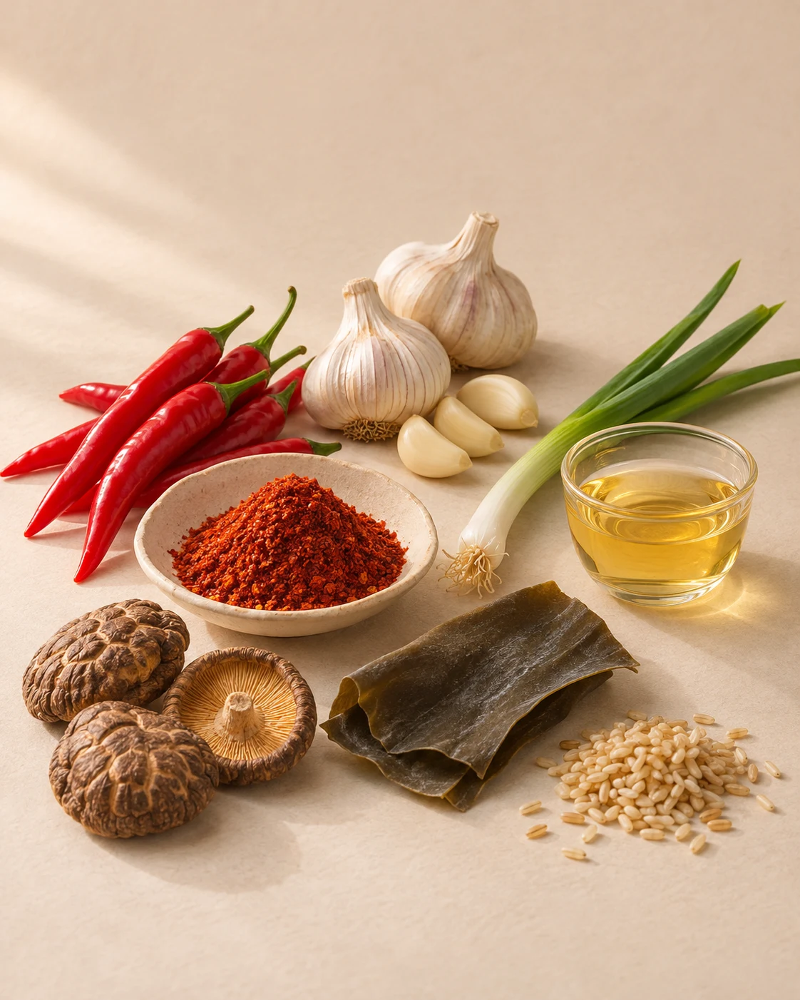
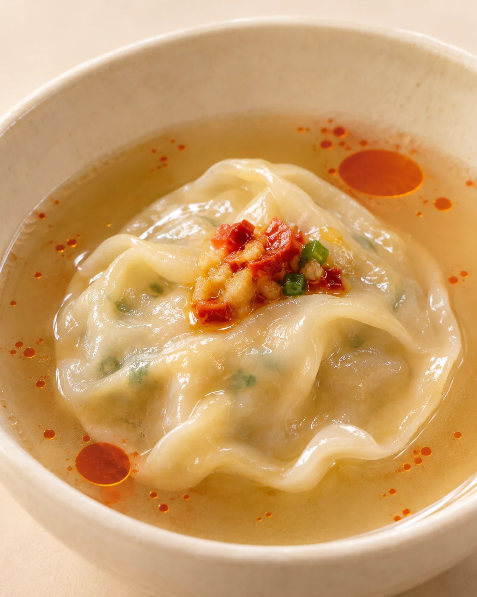
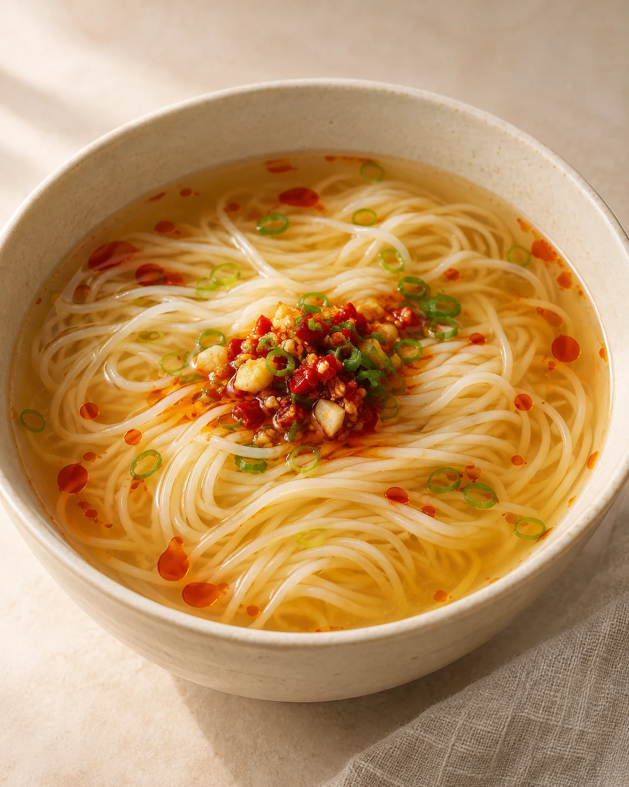
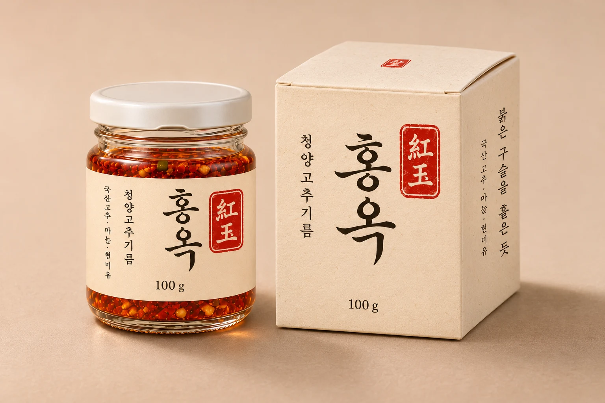

붉은구슬을흩은 듯
紅玉붉을 홍.
붉을 홍.
구슬 옥.
음식 위에 맺히는 작은 붉은 빛.
홍옥이라는 이름에 담은 풍경입니다.
국산 청양고추로 만드는 한국식 고추기름
청양고추의 깔끔한 매운맛.
표고와 다시마의 천연 감칠맛.
밥에 비비고, 만두에 얹고,
따뜻한 국물에 조금 풀어보세요.
매콤한 한 입이 당기는 날
양념을 따로 만들자니 번거롭고,
오늘도 늘 먹던 대로 한 끼를 마칩니다.
간단히 차린 식탁에도
매운맛과 향을 더할 수 있도록.
오늘은 달걀밥부터
기름과 건더기를 함께 떠서
노른자와 천천히 비벼보세요.
익숙한 밥 한 그릇에
청양고추의 매운맛과
파·마늘의 향을 더하는 방법입니다.
홍옥이 만들고 싶은 맛
국산 청양고추를 중심에 두고,
파와 마늘, 표고와 다시마를 함께 씁니다.

한 병을 이루는 재료
국산 원료를 사용하는 개발안입니다.
최종 배합과 함량은 시제품 검증 후 공개합니다.
홍옥이라는 이름이 떠오르는 순간
만두에 조금 얹고,
맑은 국물에도 살며시 풀어보세요.


내 입맛에 맞게
처음에는 적게 올려 맛을 보고,
원하는 만큼 더해주세요.
면과 함께 비벼도,
국물에 풀어도 좋습니다.
한 병을 꺼내 먹는 방법
깨끗하고 마른 숟가락으로
가볍게 저은 뒤 떠주세요.
음식에 적게 얹어 맛을 보고
입맛에 맞게 더해주세요.
밥에는 비벼서, 만두에는 얹어서.
국물에는 조금씩 풀어보세요.
음식 위에 맺히는 작은 붉은 빛.
홍옥이라는 이름에 담은 풍경입니다.
홍옥 100g
흰 뚜껑과 미색 라벨,
붉은 낙관을 찍은 작은 한 병.

첫 한 병을 고르기 전에
고추·마늘 등의 건더기와 기름을 함께 떠서 쓰는 한국식 고추기름으로 개발 중입니다. 최종 내용물과 질감은 실물 사진으로 안내할 예정입니다.
국산 청양고추를 사용합니다. 정확한 맵기와 권장 사용량은 시제품 시식 후 안내하겠습니다. 현재 특정 라면과 같은 맵기라고 단정하지 않습니다.
보관 온도와 소비기한, 개봉 후 보관법은 제조·보존성 검증 후 확정합니다. 판매 시 제품 라벨과 이 페이지에 함께 안내합니다.
사진은 병과 선물상자 디자인 시안입니다. 상자 포함 여부와 최종 판매 구성은 출시 전에 확정합니다.
첫 만남은, 100g 한 병으로
달걀밥에서 만둣국까지.
내가 즐겨 먹는 음식에 조금씩.
배송비 3,000원 · 총 16,900원
가격과 선물상자 구성은 확정 전입니다.
현재 주문·결제는 받지 않습니다.